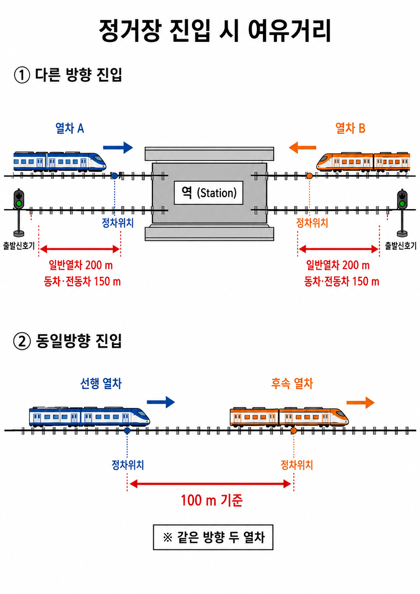
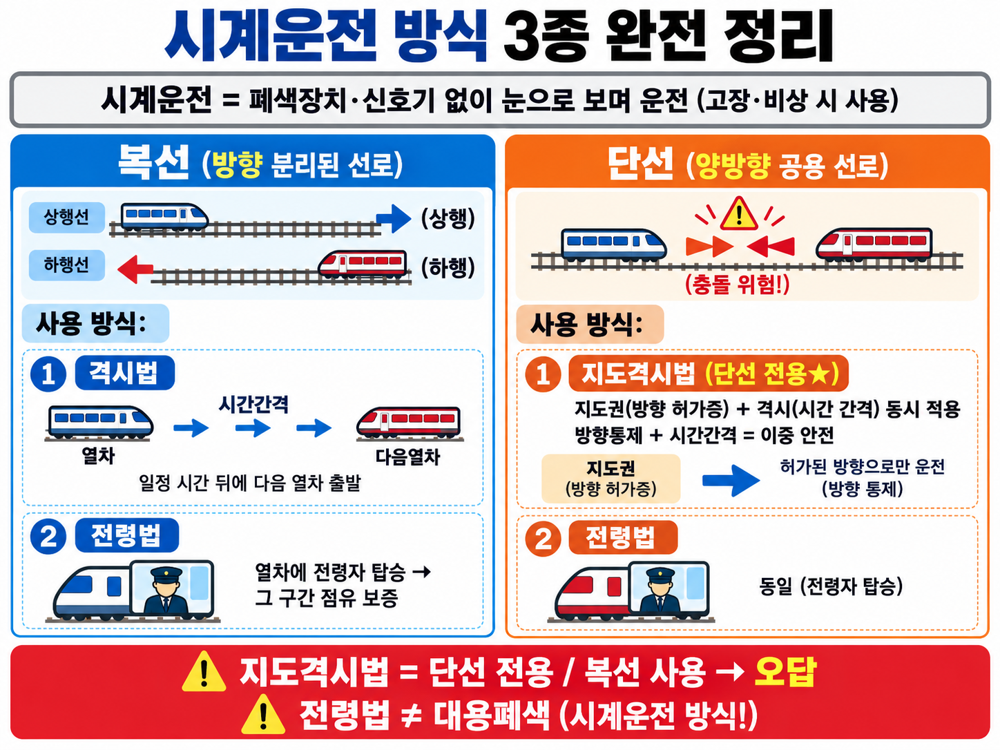
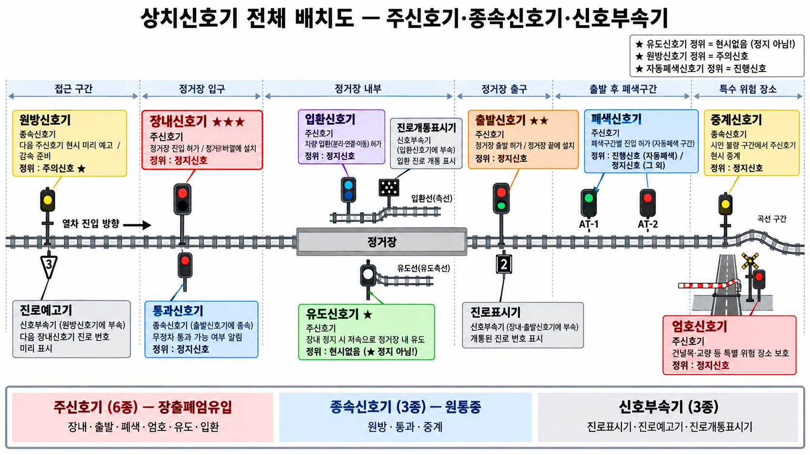
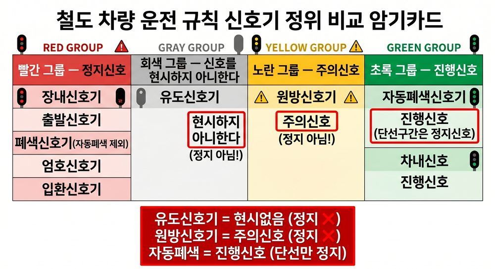
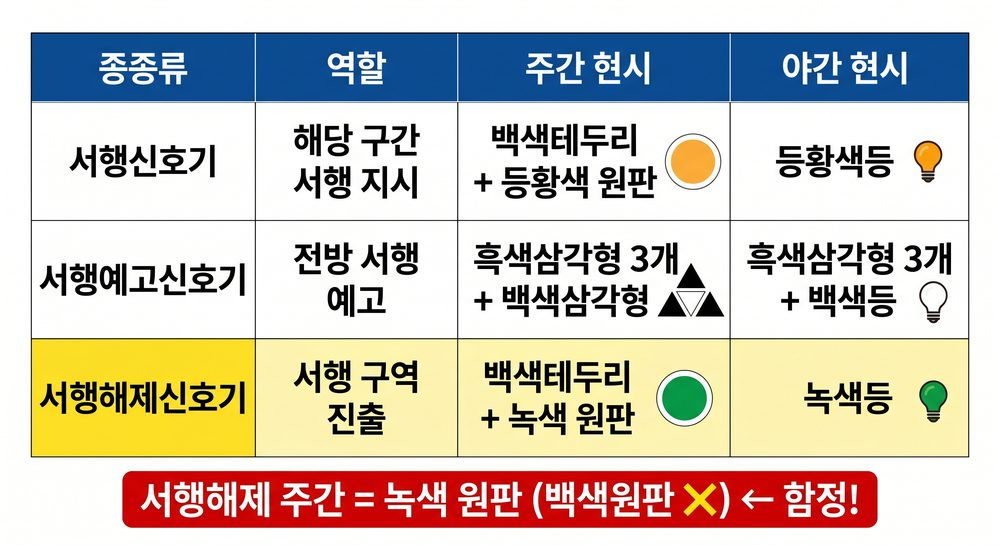
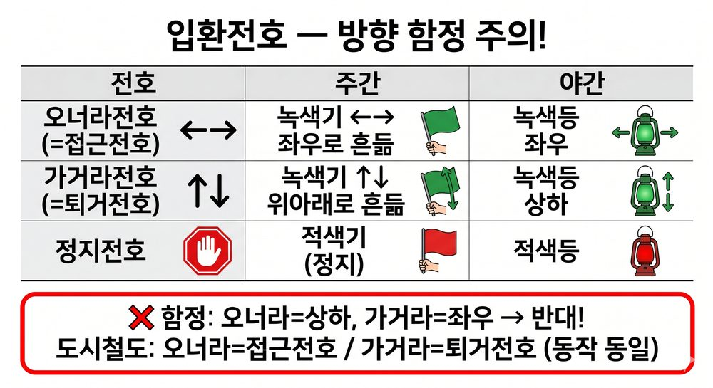

✅ 최종 체크리스트
PART 1. 철도차량운전규칙 — 기본 규정▼
C-01기본 용어 정의
| 용어 | 정의 |
|---|---|
| 정거장 | 여객 승강, 화물 적하, 열차 조성, 교행·대피 장소 |
| 본선 | 열차 운전에 상용하는 선로 |
| 측선 | 본선이 아닌 선로 |
| 완급차 | 관통제동기용 제동통·압력계·차장변·수제동기 장치 차량 |
| 조차장 | 차량의 입환·열차 조성을 위해 사용하는 장소 |
| 구내운전 | 정거장·차량기지 내 입환신호에 따른 운전 |
| 무인운전 | 사람이 열차 안에서 직접 운전 안 함 → 관제실 원격조종 |
완급차 구성 암기: "제압차수" (제동통+압력계+차장변+수제동기)
이론 배경: 열차운전규칙의 핵심 용어들은 시험에 직접 출제됩니다. 특히 정거장(여객·화물·교행 기능)과 완급차 구성 요소 암기가 중요합니다.
▶ 완급차 용도: 열차 맨 뒤에 연결하는 차량으로, 차장(승무원)이 탑승해 열차 운행을 감시·제어하고 비상 시 수동으로 열차를 정지시킬 수 있도록 한 차량. "완급(緩急)"은 속도를 늦추거나 빠르게 조절한다는 의미.
▶ 4가지 장치 각각의 역할:
• 관통제동기용 제동통: 공기제동에 쓰이는 압축공기를 저장하고, 브레이크 슈를 차축에 밀착시켜 감속·정지시키는 장치
• 압력계: 제동관(관통제동기) 내 공기압력을 표시 → 차장이 제동 상태를 직접 확인하는 계기
• 차장변(車掌辨): 차장이 비상 시 공기를 빼서 열차를 긴급정지시키는 밸브
• 수제동기(手制動機): 공기제동 고장 시 또는 정차 후 수동(손)으로 조작하는 기계식 제동기
▶ 입환(入換)이란: 정거장·차량기지 내에서 열차 조성·해체 또는 차량 이동을 위해 차량을 이동시키는 작업. 본선 운전이 아닌 구내(構內) 이동 작업.
▶ 입환신호(入換信號): 입환 작업 시 차량 이동을 허가하거나 정지시키는 신호. 정위(평상시 기본)는 정지. 구내운전(정거장·차량기지 내에서 차량을 이동시킬 때)에 이 신호에 따라 운전한다.
▶ 완급차 용도: 열차 맨 뒤에 연결하는 차량으로, 차장(승무원)이 탑승해 열차 운행을 감시·제어하고 비상 시 수동으로 열차를 정지시킬 수 있도록 한 차량. "완급(緩急)"은 속도를 늦추거나 빠르게 조절한다는 의미.
▶ 4가지 장치 각각의 역할:
• 관통제동기용 제동통: 공기제동에 쓰이는 압축공기를 저장하고, 브레이크 슈를 차축에 밀착시켜 감속·정지시키는 장치
• 압력계: 제동관(관통제동기) 내 공기압력을 표시 → 차장이 제동 상태를 직접 확인하는 계기
• 차장변(車掌辨): 차장이 비상 시 공기를 빼서 열차를 긴급정지시키는 밸브
• 수제동기(手制動機): 공기제동 고장 시 또는 정차 후 수동(손)으로 조작하는 기계식 제동기
▶ 입환(入換)이란: 정거장·차량기지 내에서 열차 조성·해체 또는 차량 이동을 위해 차량을 이동시키는 작업. 본선 운전이 아닌 구내(構內) 이동 작업.
▶ 입환신호(入換信號): 입환 작업 시 차량 이동을 허가하거나 정지시키는 신호. 정위(평상시 기본)는 정지. 구내운전(정거장·차량기지 내에서 차량을 이동시킬 때)에 이 신호에 따라 운전한다.
📝 기출 예시
Q. 완급차에 반드시 있어야 하는 장치 4가지를 쓰시오.
정답: 관통제동기용 제동통 / 압력계 / 차장변 / 수제동기 ("제압차수" 암기)
오답함정: "수동조작장치"를 포함한다고 쓰는 오답
C-02동력차 연결 위치 + 열차 안전 확보
동력차 원칙: 열차 맨 앞 연결
예외: ① 기관차 2개 이상·맨 앞에서 제어 ② 보조기관차 ③ 선로·열차 고장
④ 구원·제설·공사·시험운전열차 ⑤ 정거장↔측선 운전 ⑥ 기타 특별 사유
예외: ① 기관차 2개 이상·맨 앞에서 제어 ② 보조기관차 ③ 선로·열차 고장
④ 구원·제설·공사·시험운전열차 ⑤ 정거장↔측선 운전 ⑥ 기타 특별 사유
열차 안전 확보 3가지: 폐색 / 열차제어장치 / 시계운전
이론 배경: 동력차를 맨 앞에 연결하는 원칙은 기관사가 전방 시야를 확보하고 긴급 상황에 즉각 대응하기 위함입니다. 예외 6가지가 있어 시험에 자주 출제됩니다.
▶ 동력차 예외 6가지 — 왜 예외가 있는가
• 기관차 2개 이상·맨 앞에서 제어: 뒤쪽 기관차는 앞 기관차가 제어하므로 문제없음
• 보조기관차: 견인력 보조 목적 → 위치 고정 불필요
• 선로·열차 고장: 고장 상황에서 재배치 불가
• 구원·제설·공사·시험운전열차: 특수목적 작업열차 → 작업 방향에 따라 위치 가변
• 정거장↔측선 운전: 짧은 구내 이동 → 속도 낮고 안전 위험 낮음
• 기타 특별 사유: 철도운영기관이 인정한 불가피한 상황
▶ 폐색(閉塞)이란
선로를 일정 구간으로 나누어 한 구간에 열차 1대만 진입을 허용하는 방식. '폐색'은 "막는다"는 뜻으로, 한 열차가 구간을 점유하면 다음 열차는 그 구간이 비워질 때까지 진입 못 함 → 추돌 방지의 기본 원리.
폐색 구간이 점유됐는지는 폐색신호기로 확인: 구간 안에 열차 있으면 → 신호기 정지(적색), 비어 있으면 → 진행(녹색). 폐색방식에 따라 신호기 대신 전화통보·지도표·지도권을 사용하기도 함.
▶ 열차제어장치란
ATS·ATC·ATP를 모두 포함하는 상위 개념 (하나만 지칭하는 게 아님).
• ATS(자동열차정지장치): 신호 위반 시 자동 정지
• ATC(자동열차제어장치): 속도를 자동으로 제어
• ATP(자동열차방호장치): 충돌·탈선 방지까지 포함한 최상위 시스템
→ 세 가지 모두 "기계가 열차를 자동으로 제어·정지"하는 장치의 총칭.
▶ 시계운전(視界運轉)이란
기관사가 눈으로 전방을 직접 보면서 운전하는 방식. 전방에 장애물이나 다른 열차가 보이면 스스로 멈춤. 폐색·열차제어장치가 없거나 고장 났을 때의 최후 수단.
▶ 왜 이 3가지가 열차 안전 확보 수단인가
열차는 제동거리가 수백 m에 달해 기관사 판단만으로는 추돌을 막기 어려움. 그래서 3가지가 각각 다른 레이어로 안전을 보완:
• 폐색 → 공간 격리 (같은 구간에 2대 진입 원천 차단)
• 열차제어장치 → 자동 속도·정지 제어 (인간 실수 보완)
• 시계운전 → 장치 없거나 고장 시 최소한의 안전 확보
▶ 동력차 예외 6가지 — 왜 예외가 있는가
• 기관차 2개 이상·맨 앞에서 제어: 뒤쪽 기관차는 앞 기관차가 제어하므로 문제없음
• 보조기관차: 견인력 보조 목적 → 위치 고정 불필요
• 선로·열차 고장: 고장 상황에서 재배치 불가
• 구원·제설·공사·시험운전열차: 특수목적 작업열차 → 작업 방향에 따라 위치 가변
• 정거장↔측선 운전: 짧은 구내 이동 → 속도 낮고 안전 위험 낮음
• 기타 특별 사유: 철도운영기관이 인정한 불가피한 상황
▶ 폐색(閉塞)이란
선로를 일정 구간으로 나누어 한 구간에 열차 1대만 진입을 허용하는 방식. '폐색'은 "막는다"는 뜻으로, 한 열차가 구간을 점유하면 다음 열차는 그 구간이 비워질 때까지 진입 못 함 → 추돌 방지의 기본 원리.
폐색 구간이 점유됐는지는 폐색신호기로 확인: 구간 안에 열차 있으면 → 신호기 정지(적색), 비어 있으면 → 진행(녹색). 폐색방식에 따라 신호기 대신 전화통보·지도표·지도권을 사용하기도 함.
▶ 열차제어장치란
ATS·ATC·ATP를 모두 포함하는 상위 개념 (하나만 지칭하는 게 아님).
• ATS(자동열차정지장치): 신호 위반 시 자동 정지
• ATC(자동열차제어장치): 속도를 자동으로 제어
• ATP(자동열차방호장치): 충돌·탈선 방지까지 포함한 최상위 시스템
→ 세 가지 모두 "기계가 열차를 자동으로 제어·정지"하는 장치의 총칭.
▶ 시계운전(視界運轉)이란
기관사가 눈으로 전방을 직접 보면서 운전하는 방식. 전방에 장애물이나 다른 열차가 보이면 스스로 멈춤. 폐색·열차제어장치가 없거나 고장 났을 때의 최후 수단.
▶ 왜 이 3가지가 열차 안전 확보 수단인가
열차는 제동거리가 수백 m에 달해 기관사 판단만으로는 추돌을 막기 어려움. 그래서 3가지가 각각 다른 레이어로 안전을 보완:
• 폐색 → 공간 격리 (같은 구간에 2대 진입 원천 차단)
• 열차제어장치 → 자동 속도·정지 제어 (인간 실수 보완)
• 시계운전 → 장치 없거나 고장 시 최소한의 안전 확보
📝 기출 예시
Q. 열차 안전 확보 3가지 방법을 쓰시오.
정답: 폐색 / 열차제어장치 / 시계운전
오답함정: "신호기"를 독립된 방법으로 쓰는 오답
C-03여객열차 연결제한
원칙: 여객열차에 화차 연결 금지 (예외: 회송 또는 특별 사유)
제한사항:
• 화차 연결 시 객차 중간에 연결 금지 (앞·뒤에만 가능)
• 파손차량, 무동력기관차, 2량 이상에 무게 부담한 화차 → 여객열차 연결 금지
제한사항:
• 화차 연결 시 객차 중간에 연결 금지 (앞·뒤에만 가능)
• 파손차량, 무동력기관차, 2량 이상에 무게 부담한 화차 → 여객열차 연결 금지
여객열차에 동력기관차 연결 금지 ❌ → 동력기관차는 연결 가능
이론 배경: 여객열차에 화차를 연결하면 충격·진동 등 승객 안전에 위협이 됩니다. 단, 회송 목적이나 특별 사유는 예외입니다. 화차 연결 위치(앞·뒤만 가능)도 함께 기억하세요.
📝 기출 예시
Q. 여객열차에 화차를 연결하는 경우 화차의 위치 제한은?
정답: 객차 중간에는 연결 금지 (앞 또는 뒤에만 연결)
오답함정: "어느 위치든 무방하다"는 오답
C-04동시 진출입 기준 ★★★

열차 동시진출입 여유거리 기준 (VIS-064)
| 조건 | 기준 |
|---|---|
| 다른 방향 진입 — 일반열차 | 200m 이상 (출발신호기·정차위치로부터) |
| 다른 방향 진입 — 동차·전동차 | 150m 이상 (출발신호기·정차위치로부터) |
| 동일 방향 진입 | 100m 이상 (각 정차위치에서) |
동차·전동차 150m ↔ 동일방향 100m 숫자 교체 함정 주의!
예외: 안전측선 설치 / 서행유도 / 단행기관차 운행
이론 배경: 동시 진출입은 두 열차가 동일 정거장에 동시에 진출·입하는 것입니다. 충돌 위험이 있으므로 방향·차종별 여유거리 기준을 엄격히 규정합니다. 200m/150m/100m 세 수치 암기 필수입니다.
▶ 동차(動車)란
전동기(모터)를 내장해 자체 동력으로 달리는 차량. 일반 열차는 기관차가 끌어주는 방식이지만 동차·전동차는 스스로 동력을 냄. 가볍고 제동 성능이 뛰어나 비상제동 거리가 짧음 → 그래서 여유거리 기준이 200m(일반열차)가 아닌 150m로 줄어드는 것.
▶ "다른 방향에서 진입"이란
예: A역에 서울 방향(북쪽)에서 열차 1이 들어오는 동시에, 부산 방향(남쪽)에서도 열차 2가 들어오는 상황. 두 열차가 마주보며 같은 정거장으로 동시에 진입하는 것 → 충돌 위험 가장 높음 → 여유거리 기준 가장 엄격 (일반 200m, 동차 150m).
▶ 어떻게 판단하고 제어하는가
• 판단: 관제사(CTC 종합관제) 또는 역장이 열차 위치·방향을 실시간 확인. 선행 열차가 출발신호기(또는 정차위치)로부터 규정 거리(200m/150m/100m) 이상 벗어난 것을 확인한 후에야 다음 열차 진입 허가.
• 제어: 진입 허가 전까지 장내신호기 정지(적색) → 후속 열차 진입 불가. 거리 확보 확인 → 장내신호기 진행 현시 → 진입 허가.
▶ 동차(動車)란
전동기(모터)를 내장해 자체 동력으로 달리는 차량. 일반 열차는 기관차가 끌어주는 방식이지만 동차·전동차는 스스로 동력을 냄. 가볍고 제동 성능이 뛰어나 비상제동 거리가 짧음 → 그래서 여유거리 기준이 200m(일반열차)가 아닌 150m로 줄어드는 것.
▶ "다른 방향에서 진입"이란
예: A역에 서울 방향(북쪽)에서 열차 1이 들어오는 동시에, 부산 방향(남쪽)에서도 열차 2가 들어오는 상황. 두 열차가 마주보며 같은 정거장으로 동시에 진입하는 것 → 충돌 위험 가장 높음 → 여유거리 기준 가장 엄격 (일반 200m, 동차 150m).
▶ 어떻게 판단하고 제어하는가
• 판단: 관제사(CTC 종합관제) 또는 역장이 열차 위치·방향을 실시간 확인. 선행 열차가 출발신호기(또는 정차위치)로부터 규정 거리(200m/150m/100m) 이상 벗어난 것을 확인한 후에야 다음 열차 진입 허가.
• 제어: 진입 허가 전까지 장내신호기 정지(적색) → 후속 열차 진입 불가. 거리 확보 확인 → 장내신호기 진행 현시 → 진입 허가.
📝 기출 예시
Q. 동차·전동차가 다른 방향에서 동시 진입할 때 최소 여유거리는?
정답: 150m 이상 (출발신호기·정차위치로부터)
오답함정: 200m(일반열차 기준)로 혼동하는 오답
C-05퇴행운전 · 정거장 외 정차
| 항목 | 원칙 | 예외 |
|---|---|---|
| 퇴행운전 | 불가 | 선로·전차선로·차량 고장 / 구원·제설·공사열차 / 보조기관차 / 특별 사유 |
| 정거장 외 정차 | 금지 | 1/30 이상 급경사 진입 전 / 정지신호 / 철도사고 발생·우려 / 안전상 부득이 |
정거장 외 정차 예외 ≠ 분기기 제한속도 초과 운행
이론 배경: 퇴행운전은 진행 방향과 반대로 이동하는 것으로, 후방 시야 확보가 어려워 충돌 위험이 증가합니다. 선로·차량 고장, 구원열차 등 특수 상황에서만 예외를 인정합니다.
📝 기출 예시
Q. 정거장 외 정차 예외 사유로 옳지 않은 것은?
정답: 분기기 제한속도 초과 운행 (정차 허용 사유 아님)
오답함정: "1/30 이상 급경사 진입 전"을 오답으로 착각하는 경우
PART 2. 폐색방식 ★★★▼
C-06폐색방식 전체 분류

폐색방식 8종 분류표 (VIS-061)
| 구분 | 방식 (4종) | 암기 |
|---|---|---|
| 상용폐색 | 자동폐색식 / 연동폐색식 / 차내신호폐색식 / 통표폐색식 | 자연차통 |
| 대용폐색 | 통신식 / 지도통신식 / 지도식 / 지령식 | 통지지지 |
이론 배경: 폐색(閉塞)이란 하나의 구간에 하나의 열차만 진입할 수 있도록 막는 방식입니다. 상용폐색이 불가능할 때 대용폐색으로 전환합니다. 8종을 모두 외워야 합니다.
📝 기출 예시
Q. 상용폐색 4종을 모두 쓰시오.
정답: 자동폐색식 / 연동폐색식 / 차내신호폐색식 / 통표폐색식 (자연차통)
오답함정: "지도통신식"을 상용폐색에 포함하는 오답
C-07각 폐색방식 핵심 포인트
| 폐색방식 | 핵심 내용 |
|---|---|
| 자동폐색 | 열차/차량 있을 때, 선로전환기 불량, 장치 고장 → 자동 정지신호 |
| 연동폐색 | 양끝 정거장·신호소 협동 / 통과 전 표시 변경 불가 / 단선구간: 반대방향 자동 정지 |
| 차내신호폐색 | 차량 내부에 신호 표시 / 지상장치 고장 시 자동 정지 |
| 통표폐색 | 해당 구간 통표 1개만 사용 / 단선 전용 ★ |
| 통신식 | 전용 통신설비 원칙 / 관제업무종사자 또는 운전취급담당자 승인 |
| 지도통신식 | 1구간 1매의 지도표 / 지도권은 지도표 있는 역 협의 후 발행 |
| 지도식 | 단순 1폐색구간 / 지도표 1매 |
| 지령식 | ① 관제 감시 가능 + ② 통신장치 정상 → 관제 승인으로 시행 |
통표폐색식 = 단선 전용 / '복선 사용 가능' 함정 주의!
이론 배경: 통표폐색식은 실물 통표를 기관사가 직접 소지해야 구간에 진입할 수 있습니다. 물리적 증표 방식으로 단선 전용이며, 복선에는 사용하지 않습니다.
📝 기출 예시
Q. 폐색방식 중 단선 전용으로만 사용되는 방식은?
정답: 통표폐색식
오답함정: "복선에서도 사용 가능하다"는 오답
C-08지도표 vs 지도권 기입사항 ★★★
| 항목 | 기입사항 |
|---|---|
| 지도표 | 구간 양끝 정거장명 + 발행일자 + 사용열차번호 |
| 지도권 | 사용구간 + 사용열차 + 발행일자 + 지도표 번호 |
지도표에 기관사 이름 기입 ❌ → 포함되지 않음
이론 배경: 지도표는 구간 통과 자격을 증명하는 공식 서류입니다. 구간(양끝역명), 유효성(발행일자), 열차(번호) 세 가지가 핵심 기입사항입니다. 기관사 이름이나 역장 서명은 포함되지 않습니다.
📝 기출 예시
Q. 지도표에 기입하는 사항 3가지를 쓰시오.
정답: 구간 양끝 정거장명 / 발행일자 / 사용열차번호
오답함정: "기관사 이름"을 기입사항으로 쓰는 오답
C-09시계운전 방식
시계운전(視界運轉)이란?
신호기나 폐색장치 없이 기관사가 눈으로 직접 전방을 보면서 운전하는 방식. 폐색장치 고장·비상 시 최후 수단으로 사용.
신호기나 폐색장치 없이 기관사가 눈으로 직접 전방을 보면서 운전하는 방식. 폐색장치 고장·비상 시 최후 수단으로 사용.

시계운전 방식 3종 비교 (VIS-090)
| 방식 | 사용 선종 | 안전 확보 원리 | 핵심 특징 |
|---|---|---|---|
| 격시법 (隔時法) | 복선 전용 | 시간 간격(운전 시격)으로 분리 | 앞 열차 출발 후 지정 시간이 지나야 후속 열차 출발. 복선은 반대 방향 열차가 없어 시간 격리만으로 충분 |
| 전령법 (傳令法) | 복선·단선 모두 | 전령자(사람)가 열차에 직접 동승 | 전령자가 탑승한 동안 그 구간이 점유된 것으로 간주. 단선·복선 모두 적용 가능한 유일한 방식 |
| 지도격시법 (指導隔時法) | 단선 전용 | 방향 지도(指導) + 시간 격리(隔時) 동시 적용 | 단선은 양방향 열차가 같은 선로를 공유하므로 방향 통제가 필수. 방향 허가 + 시간 간격을 모두 충족해야 출발 가능 |
격시=복선 전용 | 지도격시=단선 전용 | 전령=복선·단선 모두
단선은 마주오는 열차 위험 → 방향 통제 필수 → 지도격시법 전용
단선은 마주오는 열차 위험 → 방향 통제 필수 → 지도격시법 전용
격시법이 단선에도 쓰인다 ❌ → 복선 전용
지도격시법이 복선에도 쓰인다 ❌ → 단선 전용
지도격시법이 복선에도 쓰인다 ❌ → 단선 전용
왜 단선은 지도격시법인가? 복선은 상행·하행 선로가 분리돼 있어 반대 방향 열차와 충돌 위험이 없습니다. 그래서 시간 간격(격시)만으로 충분합니다. 반면 단선은 하나의 선로를 양방향이 공유하므로, 서로 마주보는 방향의 열차가 동시에 들어오면 정면충돌합니다. 따라서 단선에서는 반드시 방향 허가(지도)가 먼저 이루어지고, 그 위에 시간 간격(격시)까지 더해야 안전합니다.
📝 기출 예시
Q. 시계운전 방식 3가지를 모두 쓰고, 복선·단선 전용을 구분하시오.
정답: ① 격시법(복선 전용) ② 전령법(복선·단선 모두) ③ 지도격시법(단선 전용)
오답함정: "격시법이 단선에서도 쓰인다" / "지도격시법이 복선에도 가능하다"
PART 3. 신호기 체계 ★★★▼
C-10상치신호기 분류 — 주신호기 · 종속신호기 · 신호부속기

상치신호기 전체 배치도 — 실제 선로 위 12종 배치 (VIS-091)
상치신호기(常置信號機)란?
일정 장소에 고정 설치되는 신호기. 임시신호기(서행·서행예고·서행해제)와 반대 개념.
주신호기가 직접 운전 명령 → 종속신호기가 주신호기를 보조 → 신호부속기가 부가 정보 제공
일정 장소에 고정 설치되는 신호기. 임시신호기(서행·서행예고·서행해제)와 반대 개념.
주신호기가 직접 운전 명령 → 종속신호기가 주신호기를 보조 → 신호부속기가 부가 정보 제공
| 분류 | 암기 | 종류 및 핵심 기능 | 정위 |
|---|---|---|---|
| 주신호기 (6종) | 장출폐 엄유입 | 장내신호기 — 정거장 바깥에 설치. 열차가 정거장 진입할 때 허가 신호 현시 | 정지 |
| 출발신호기 — 정거장 끝(선로 말단)에 설치. 열차가 정거장을 출발할 때 허가 신호 현시 | 정지 | ||
| 폐색신호기 — 자동폐색 구간 내 설치. 각 폐색구간 진입 허가 (자동폐색 제외 시 정위=정지, 자동폐색은 진행) | 정지 (자동폐색=진행) | ||
| 엄호신호기 — 건널목·교량 등 특별히 위험한 장소 앞에 설치. 위험지점 보호 | 정지 | ||
| 유도신호기 — 장내신호기가 정지현시 중에도 저속으로 정거장 내 유도. 출발 열차와 같은 선로로 안내 | 현시없음 | ||
| 입환신호기 — 차량 입환(이동·분리·연결) 작업 허가. 입환 전용 신호 | 정지 | ||
| 종속신호기 (3종) | 원통중 | 원방신호기 — 주신호기(장내·폐색 등) 앞쪽에 설치. 다음 주신호기의 현시를 미리 예고해 감속 준비 알림 | 주의 |
| 통과신호기 — 출발신호기에 종속. 열차가 역을 무정차 통과해도 되는지 알림. 장내신호기 하부에 설치 | 정지 | ||
| 중계신호기 — 곡선·터널 등 시인 불량 구간에서 주신호기 현시를 중계. 주신호기 현시와 동일한 내용 표시 | 정지 | ||
| 신호부속기 (3종) | — | 진로표시기 — 장내·출발신호기에 부속. 열차가 개통된 진로 번호(선로)를 숫자·기호로 표시 | — |
| 진로예고기 — 원방신호기에 부속. 다음 장내신호기에서 개통될 진로를 미리 알림 | — | ||
| 진로개통표시기 — 입환신호기에 부속. 입환 진로가 개통되었음을 표시 | — |
주신호기 = 직접 운전 명령 (열차 진행·정지) | 종속신호기 = 주신호기 보조·예고 | 신호부속기 = 진로 안내 정보
원방신호기 정위 = 주의 (미리 주의를 줘야 하므로) | 유도신호기 정위 = 현시없음 (부르는 신호가 기본이 아님)
원방신호기 정위 = 주의 (미리 주의를 줘야 하므로) | 유도신호기 정위 = 현시없음 (부르는 신호가 기본이 아님)
원방신호기 → 주신호기에 포함 ❌ → 종속신호기
유도신호기 정위 = 정지 ❌ → 현시없음
통과신호기 → 독립 신호기 ❌ → 출발신호기에 종속
유도신호기 정위 = 정지 ❌ → 현시없음
통과신호기 → 독립 신호기 ❌ → 출발신호기에 종속
종속신호기가 왜 필요한가? 열차는 제동 거리가 길어서 주신호기를 발견한 직후 멈출 수 없습니다. 원방신호기는 먼 거리에서 미리 "앞에 주의(또는 정지) 신호가 있다"고 예고해 감속 준비 시간을 줍니다. 중계신호기는 곡선·터널처럼 앞이 안 보이는 구간에서 주신호기 현시를 대신 보여줍니다.
📝 기출 예시
Q. 상치신호기의 3가지 분류와 각각에 속하는 신호기를 쓰시오.
정답: ① 주신호기 — 장내·출발·폐색·엄호·유도·입환(장출폐엄유입) ② 종속신호기 — 원방·통과·중계(원통중) ③ 신호부속기 — 진로표시기·진로예고기·진로개통표시기
오답함정: 원방신호기를 주신호기에 포함 / 유도신호기 정위를 정지로 쓰는 오답
C-11신호기 기본원칙 (정위) ★★★

신호기 정위 비교 암기카드 (VIS-062)
| 신호기 | 기본 현시 (정위) |
|---|---|
| 장내신호기 | 정지신호 |
| 출발신호기 | 정지신호 |
| 폐색신호기 (자동폐색 제외) | 정지신호 |
| 엄호신호기 | 정지신호 |
| 입환신호기 | 정지신호 |
| 유도신호기 | 신호를 현시하지 아니한다 |
| 원방신호기 | 주의신호 |
| 자동폐색신호기 | 진행신호 (단선구간은 정지신호) |
| 차내신호 | 진행신호 |
유도신호기 기본 = 정지신호 ❌ → 현시없음 (정지 아님!)
원방신호기 기본 = 진행신호 ❌ → 주의신호
이론 배경: 정위(定位)란 신호기의 평상시 기본 위치입니다. 대부분 정지가 정위이지만, 자동폐색신호기=진행, 원방신호기=주의, 유도신호기=현시없음은 반드시 외워야 합니다.
📝 기출 예시
Q. 유도신호기의 정위(기본 현시)는 무엇인가?
정답: 신호를 현시하지 아니한다 (현시없음)
오답함정: "정지신호"라고 답하는 오답
C-12신호현시 방식 (색등식)
| 현시 | 신호 종류 | 색 |
|---|---|---|
| 5현시 | 정지·경계·주의·감속·진행 | 적·황황·황·황녹·녹 |
| 4현시 | 정지·주의·감속·진행 | 적·황·황녹·녹 |
| 3현시 | 정지·주의·진행 | 적·황·녹 |
| 2현시 | 정지·진행 | 적·녹 |
이론 배경: 현시 단계가 많을수록 더 세밀한 속도 제어가 가능합니다. 5현시는 정지·경계·주의·감속·진행 5단계로, 경계신호는 황색등 2개(황황)로 표시됩니다.
📝 기출 예시
Q. 5현시에서 경계신호에 해당하는 색은?
정답: 황황(등황색 2개 동시 점등)
오답함정: "황색 1개"로 답하는 오답
C-13수신호 현시방법
| 신호 | 주간 | 야간 |
|---|---|---|
| 정지신호 | 적색기 (없으면 양팔 높이 들거나 녹색기 외 급히 흔듦) | 적색등 (없으면 녹색등 외 급히 흔듦) |
| 서행신호 | 적색기+녹색기 모아쥐고 머리 위 교차 | 깜박이는 녹색등 |
| 진행신호 | 녹색기 (없으면 한 팔 높이 듦) | 녹색등 |
수신호에 감속신호 있음 ❌ → 수신호 = 정지·서행·진행 3종뿐
이론 배경: 수신호는 신호기 고장이나 비상 상황에서 사용하는 보조 신호입니다. 수신호는 3종만 있습니다 — 정지, 서행, 진행. 감속신호는 수신호에 없습니다.
📝 기출 예시
Q. 수신호 종류로 올바른 것은?
정답: 정지 / 서행 / 진행 3종
오답함정: "감속신호"를 수신호에 포함하는 오답
C-14임시신호기 3종 ★★★

임시신호기 3종 비교표 (VIS-066)
| 종류 | 역할 | 주간 현시 | 야간 현시 |
|---|---|---|---|
| 서행신호기 | 해당 구간 서행 지시 | 백색테두리+등황색 원판 | 등황색등 |
| 서행예고신호기 | 전방 서행 예고 | 흑색삼각형 3개+백색삼각형 | 흑색삼각형 3개+백색등 |
| 서행해제신호기 | 서행 구역 진출 | 백색테두리+녹색 원판 | 녹색등 |
서행해제신호기 주간 = 백색원판 ❌ → 녹색 원판
이론 배경: 임시신호기는 선로 공사 구간에 순서대로 설치됩니다: 서행예고 → 서행 → 서행해제. 색 구분이 중요합니다 — 서행신호기=등황색, 서행해제=녹색.
📝 기출 예시
Q. 서행해제신호기의 주간 현시(색)는?
정답: 백색테두리+녹색 원판
오답함정: "백색 원판"이라고 답하는 오답
C-15입환전호 ★★★

입환전호 비교카드 (VIS-063)
| 전호 | 주간 | 야간 |
|---|---|---|
| 오너라전호 (=접근전호) | 녹색기 좌우로 흔듦 | 녹색등 좌우 |
| 가거라전호 (=퇴거전호) | 녹색기 위아래로 흔듦 | 녹색등 상하 |
| 정지전호 | 적색기 | 적색등 |
오너라=상하, 가거라=좌우 ❌ → 오너라=좌우, 가거라=상하 (반대 함정!)
도시철도: 오너라=접근전호 / 가거라=퇴거전호 (동작 동일)
입환(入換)이란 무엇인가?
입환은 정거장 내에서 차량을 이동·연결·분리하는 작업입니다. 열차는 운행을 마치거나 시작하기 전에 반드시 아래와 같은 작업이 필요합니다.
입환이 필요한 이유 (목적):
① 열차 편성 — 여객·화물 차량을 기관차에 연결해 출발 준비
② 차량 분리 — 목적지별로 화물차량을 분리하거나 객차 수 조정
③ 기관차 방향 전환 — 종착역에서 기관차를 열차 반대편으로 이동 (회차)
④ 유치선 입고 — 운행 종료 후 차량을 보관선(유치선)으로 이동
⑤ 점검·정비 이동 — 검수 시설, 세척선 등으로 차량 이동
왜 전호(傳號)가 필요한가?
입환 작업 중 기관사는 후방이나 측면을 직접 볼 수 없습니다. 전호원(지상 작업자)이 차량 앞뒤를 보면서 안전을 확인하고, 기관사에게 이동 방향을 신호로 전달합니다. 즉, 전호원 → 기관사의 눈과 귀 역할을 합니다.
오너라(접근)=좌우, 가거라(퇴거)=상하 — 반대로 외우면 100% 틀립니다.
입환은 정거장 내에서 차량을 이동·연결·분리하는 작업입니다. 열차는 운행을 마치거나 시작하기 전에 반드시 아래와 같은 작업이 필요합니다.
입환이 필요한 이유 (목적):
① 열차 편성 — 여객·화물 차량을 기관차에 연결해 출발 준비
② 차량 분리 — 목적지별로 화물차량을 분리하거나 객차 수 조정
③ 기관차 방향 전환 — 종착역에서 기관차를 열차 반대편으로 이동 (회차)
④ 유치선 입고 — 운행 종료 후 차량을 보관선(유치선)으로 이동
⑤ 점검·정비 이동 — 검수 시설, 세척선 등으로 차량 이동
왜 전호(傳號)가 필요한가?
입환 작업 중 기관사는 후방이나 측면을 직접 볼 수 없습니다. 전호원(지상 작업자)이 차량 앞뒤를 보면서 안전을 확인하고, 기관사에게 이동 방향을 신호로 전달합니다. 즉, 전호원 → 기관사의 눈과 귀 역할을 합니다.
오너라(접근)=좌우, 가거라(퇴거)=상하 — 반대로 외우면 100% 틀립니다.
📝 기출 예시
Q. 오너라전호(접근전호)의 주간 방법은?
정답: 녹색기를 좌우로 흔듦
오답함정: "위아래로 흔든다"는 오답 (위아래=가거라)
C-16제한신호 추정 원칙
1. 신호 현시 없거나 불명확 → 정지신호로 간주
2. 상치신호기 vs 수신호 다를 때 → 더 제한하는 쪽(수신호) 적용
단, 사전에 통보가 있으면 → 통보된 신호에 따름
2. 상치신호기 vs 수신호 다를 때 → 더 제한하는 쪽(수신호) 적용
단, 사전에 통보가 있으면 → 통보된 신호에 따름
사전통보 있어도 정지신호로 간주 ❌ → 통보된 신호에 따름
이론 배경: 불명확한 신호를 정지로 간주하는 것은 "가장 안전한 해석" 원칙입니다. 단, 사전 통보가 있으면 통보된 신호를 따릅니다. 이 예외가 시험 함정으로 자주 출제됩니다.
📝 기출 예시
Q. 상치신호기와 수신호의 현시가 다를 때 따르는 원칙은?
정답: 더 제한적인 쪽(수신호)에 따름. 단, 사전 통보가 있으면 통보된 신호에 따름
오답함정: "항상 수신호를 따른다"는 오답
PART 4. 열차제어장치 (ATS·ATC·ATP) ★★★▼
C-17열차제어장치 분류 — ATS · ATC · ATP ★★★
열차제어장치란?
기관사의 실수(신호 위반, 과속)를 자동으로 보완해 열차 충돌·탈선을 막는 안전 시스템.
ATS → ATC → ATP 순으로 기능이 강화되며, 상위 장치가 하위 장치의 기능을 포함.
기관사의 실수(신호 위반, 과속)를 자동으로 보완해 열차 충돌·탈선을 막는 안전 시스템.
ATS → ATC → ATP 순으로 기능이 강화되며, 상위 장치가 하위 장치의 기능을 포함.
| 비교 항목 | ATS Automatic Train Stop 열차자동정지장치 | ATC Automatic Train Control 열차자동제어장치 | ATP Automatic Train Protection 열차자동방호장치 |
|---|---|---|---|
| 핵심 기능 | 속도 위반 시 자동 정지 | 속도 자동 제어 (감속·정지) | ATC 기능 전체 포함 + 목표지점 자동 정지 |
| 신호 위치 | 지상신호기 중심 (지상 발리스) | 차내신호기 중심 (차량 내부 표시) | 차내신호기 (연속 수신) |
| 속도 제어 | ❌ 정지 명령만 | ✅ 연속 속도 제어 | ✅ 연속 속도 제어 |
| 연속 감시 | ❌ 특정 지점만 (점·지점 방식) | ✅ 구간 전체 (연속 방식) | ✅ 구간 전체 (연속 방식) |
| 기관사 역할 | 경보 후 기관사 확인 필요 미확인 시 자동 정지 | 속도 초과 시 자동 감속 (확인 불필요) | 위험 시 자동 제동으로 목표 정지 |
| 차내 속도 표시 | ❌ 없음 | ✅ 허용속도 실시간 표시 ★ | ✅ 표시 |
| 적용 노선 예 | 재래선, 일반철도 | KTX, 도시철도 | 고속철도(유럽 ETCS 기준) |
| 기능 수준 | ★ 기본 | ★★★ 중급 | ★★★★ 최상위 |
ATS = 지상신호 + 정지만 | ATC = 차내신호 + 속도 연속 제어 + 차내 표시 | ATP = ATC 전부 + 자동제동 목표정지
차내 속도 표시 → ATC가 핵심 포인트 (ATS는 표시 없음!)
차내 속도 표시 → ATC가 핵심 포인트 (ATS는 표시 없음!)
ATS도 차내에 속도를 표시한다 ❌ → 차내 표시는 ATC부터
ATP는 ATC와 완전히 다른 별개 장치다 ❌ → ATP는 ATC 기능을 포함하는 상위 장치
ATP는 ATC와 완전히 다른 별개 장치다 ❌ → ATP는 ATC 기능을 포함하는 상위 장치
왜 ATS만으로는 부족한가?
ATS는 특정 지점을 지날 때만 속도를 검사합니다. 지점과 지점 사이 구간에서는 과속을 감지하지 못합니다. 반면 ATC는 선행 열차 위치에 따라 허용 속도를 실시간으로 계속 바꿔주고, 초과하면 즉시 자동 감속합니다. ATP는 여기에 더해 목표 정지 지점까지 자동으로 제동하여 열차 간 충돌을 원천 차단합니다.
ATS는 특정 지점을 지날 때만 속도를 검사합니다. 지점과 지점 사이 구간에서는 과속을 감지하지 못합니다. 반면 ATC는 선행 열차 위치에 따라 허용 속도를 실시간으로 계속 바꿔주고, 초과하면 즉시 자동 감속합니다. ATP는 여기에 더해 목표 정지 지점까지 자동으로 제동하여 열차 간 충돌을 원천 차단합니다.
📝 기출 예시
Q. 차량 내부에 허용속도를 실시간으로 표시하는 열차제어장치는?
정답: ATC (열차자동제어장치)
오답함정: "ATS"로 혼동하는 오답 — ATS는 차내 표시 없음
📝 기출 예시 2
Q. ATS, ATC, ATP를 기능 강화 순서대로 나열하고, 각각의 신호 위치를 쓰시오.
정답: ATS(지상신호) → ATC(차내신호, 연속 제어) → ATP(차내신호, 자동제동 포함)
오답함정: ATS를 차내신호 방식으로 쓰는 오답
PART 5. 도시철도운전규칙 ★★▼
C-18주요 정의 비교 — 공작물 vs 인공구조물
먼저 전차선로(電車線路)가 뭔지부터
전기로 달리는 열차(전기철도)는 위에서 전기를 공급받습니다.
이때 전기를 공급하는 구리 선(케이블) = 전차선(電車線)
전차선 하나로는 허공에 뜰 수 없으니 기둥·철탑·구조물이 이 선을 지지합니다.
전차선로 = 전차선(구리 선) + 이를 지지하는 구조물
문제는 "지지하는 구조물"을 규칙마다 다른 용어로 부른다는 것입니다.
전기로 달리는 열차(전기철도)는 위에서 전기를 공급받습니다.
이때 전기를 공급하는 구리 선(케이블) = 전차선(電車線)
전차선 하나로는 허공에 뜰 수 없으니 기둥·철탑·구조물이 이 선을 지지합니다.
전차선로 = 전차선(구리 선) + 이를 지지하는 구조물
문제는 "지지하는 구조물"을 규칙마다 다른 용어로 부른다는 것입니다.
| 구분 | 적용 규칙 | 전차선로 정의 | 왜 이 용어? |
|---|---|---|---|
| 일반 철도 (지상) | 철도차량운전규칙 | 전차선 + 이를 지지하는 공작물 | 지상에 세운 전봇대·철탑처럼 독립된 구조물을 세워서 전차선을 지지 → "공작물" |
| 도시철도 (지하철 등) | 도시철도운전규칙 | 전차선 + 이를 지지하는 인공구조물 | 터널 천장·교각 벽면처럼 이미 있는 구조물에 선을 부착·고정 → 더 넓은 개념인 "인공구조물" |
쉽게 기억하는 방법
🚆 일반 철도 (지상 선로): 산이나 들판에 전봇대처럼 기둥을 세우고, 그 기둥이 전차선을 잡아줍니다. 이 기둥이 "공작물"입니다. 땅에 새로 만들어 세운 독립 구조물이에요.
🚇 도시철도 (지하철): 터널 안에는 전봇대를 세울 공간이 없습니다. 대신 터널 천장, 콘크리트 벽면, 고가 교각에 직접 전차선을 고정합니다. 터널 자체가 "인공구조물"이고, 거기에 선을 붙이는 거예요.
핵심: 용어만 다를 뿐 하는 일은 같습니다 — 전차선을 공중에 지지하는 것.
시험은 이 용어 차이(공작물 vs 인공구조물)를 묻습니다.
🚆 일반 철도 (지상 선로): 산이나 들판에 전봇대처럼 기둥을 세우고, 그 기둥이 전차선을 잡아줍니다. 이 기둥이 "공작물"입니다. 땅에 새로 만들어 세운 독립 구조물이에요.
🚇 도시철도 (지하철): 터널 안에는 전봇대를 세울 공간이 없습니다. 대신 터널 천장, 콘크리트 벽면, 고가 교각에 직접 전차선을 고정합니다. 터널 자체가 "인공구조물"이고, 거기에 선을 붙이는 거예요.
핵심: 용어만 다를 뿐 하는 일은 같습니다 — 전차선을 공중에 지지하는 것.
시험은 이 용어 차이(공작물 vs 인공구조물)를 묻습니다.
도시철도에서 전차선로 = 전차선 + 공작물 ❌ → 인공구조물
일반 철도에서 전차선로 = 전차선 + 인공구조물 ❌ → 공작물
일반 철도에서 전차선로 = 전차선 + 인공구조물 ❌ → 공작물
📝 기출 예시
Q. 도시철도운전규칙에서 전차선로의 정의를 쓰시오.
정답: 전차선 및 이를 지지하는 인공구조물
오답함정: "공작물"이라고 답하는 오답 (공작물=철도차량운전규칙)
C-19점검 주기 ★★★
선로 vs 전차선로 — 헷갈리면 먼저 구분하세요
선로(線路) = 열차가 굴러가는 바닥의 레일(궤도)
→ 열차 바퀴가 닿는 철제 궤도 + 침목 + 자갈·콘크리트 노반
전차선로(電車線路) = 열차에 전기를 공급하는 공중의 선 + 지지 구조물
→ 열차 위에 있는 구리선 + 그걸 받치는 기둥/구조물 (C-18 참고)
즉, 선로=바닥, 전차선로=위(공중). 완전히 다른 설비입니다.
선로(線路) = 열차가 굴러가는 바닥의 레일(궤도)
→ 열차 바퀴가 닿는 철제 궤도 + 침목 + 자갈·콘크리트 노반
전차선로(電車線路) = 열차에 전기를 공급하는 공중의 선 + 지지 구조물
→ 열차 위에 있는 구리선 + 그걸 받치는 기둥/구조물 (C-18 참고)
즉, 선로=바닥, 전차선로=위(공중). 완전히 다른 설비입니다.
| 설비 | 역할 | 점검 주기 | 이유 |
|---|---|---|---|
| 선로 | 열차가 달리는 레일·궤도 | 매일 1회 이상 순회점검 | 레일 이상 → 탈선 직결. 매일 확인 필수 |
| 전차선로 | 전기 공급선+지지 구조물 | 매일 1회 이상 순회점검 | 전차선 단선·처짐 → 운행 불능. 매일 확인 필수 |
| 통신설비 | 역간 통신 장치 | 일정한 주기 | 전자장비 — 정기 점검 |
| 운전보안장치 | ATS·ATC 등 안전 장치 | 일정한 주기 | 전자장비 — 정기 점검 |
운전보안장치도 매일 점검 ❌ → 매일은 선로·전차선로만 (통신설비·운전보안장치는 일정 주기)
왜 선로와 전차선로만 매일?
선로에 균열·변형이 생기면 → 탈선 사고. 전차선이 끊기거나 처지면 → 열차가 전기를 못 받아 운행 불능 또는 집전장치 파손. 둘 다 열차가 움직이기 위한 절대적 인프라라 매일 점검합니다. 반면 통신설비·운전보안장치는 전자장비라 매일 육안 순회보다 정기적 정밀 점검이 효과적입니다.
선로에 균열·변형이 생기면 → 탈선 사고. 전차선이 끊기거나 처지면 → 열차가 전기를 못 받아 운행 불능 또는 집전장치 파손. 둘 다 열차가 움직이기 위한 절대적 인프라라 매일 점검합니다. 반면 통신설비·운전보안장치는 전자장비라 매일 육안 순회보다 정기적 정밀 점검이 효과적입니다.
📝 기출 예시
Q. 도시철도에서 매일 1회 이상 순회점검해야 하는 설비 2가지는?
정답: 선로 / 전차선로
오답함정: "운전보안장치도 매일 점검"이라는 오답
C-20비상제동거리 ★★★
도시철도 비상제동거리 = 600미터 이하
비상제동을 건 순간부터 완전히 멈출 때까지 이동한 거리 ≤ 600m
비상제동을 건 순간부터 완전히 멈출 때까지 이동한 거리 ≤ 600m
비상제동거리 400m ❌ → 600m
⓪ 비상(非常)을 어떻게 아는가? — 비상제동의 발동 조건
비상제동은 아래 3가지 방법으로 발동됩니다.
① ATC/ATP 자동 발동 — 차내신호장치가 허용속도 초과·신호 위반을 감지하면 자동으로 비상제동을 작동시킴. 기관사가 모르더라도 시스템이 먼저 알아서 브레이크를 걸어버림
② 기관사 직접 조작 — 기관사가 전방 장애물·이상을 인지하여 비상제동 핸들을 작동
③ 사자장치(Dead-man/EB장치) — 기관사가 일정 시간 핸들에서 손을 떼거나 의식을 잃으면 자동으로 비상제동 발동
① "600m 이하"의 정확한 의미
"600m 전에 비상제동을 걸어야 한다"는 뜻이 아닙니다.
→ 비상제동을 작동시킨 그 지점에서 열차가 완전히 서는 지점까지의 거리가 600m를 넘으면 안 된다는 뜻입니다.
→ 즉, 차량 자체의 성능 기준입니다. 비상 브레이크를 밟으면 600m 안에 반드시 멈출 수 있어야 합니다.
② 왜 600m인가? — 도시철도 구조상 이유
도시철도(지하철)는 역간 거리가 약 1~2km에 불과합니다. 열차 간 운행 간격도 짧고, 지하 터널은 탈출로도 없습니다. 만약 비상제동거리가 너무 길면 전방 열차를 추돌하거나 역을 지나쳐버릴 위험이 있습니다. 600m 이내 정차 능력은 이런 사고를 막기 위한 최소 안전 기준입니다.
③ 600m를 넘으면 어떻게 되나?
해당 차량은 도시철도에 투입 불가입니다. 도시철도운전규칙은 이 기준을 차량 운행 자격 조건으로 정하고 있어, 기준을 초과하는 차량은 정비·개선 전까지 영업운행에 사용할 수 없습니다.
④ 일반철도와의 비교
일반 철도는 구간별 속도·환경이 다양해 비상제동거리 기준이 도시철도처럼 단일 수치로 규정되지 않습니다. 도시철도만 600m 단일 기준을 사용합니다.
비상제동은 아래 3가지 방법으로 발동됩니다.
① ATC/ATP 자동 발동 — 차내신호장치가 허용속도 초과·신호 위반을 감지하면 자동으로 비상제동을 작동시킴. 기관사가 모르더라도 시스템이 먼저 알아서 브레이크를 걸어버림
② 기관사 직접 조작 — 기관사가 전방 장애물·이상을 인지하여 비상제동 핸들을 작동
③ 사자장치(Dead-man/EB장치) — 기관사가 일정 시간 핸들에서 손을 떼거나 의식을 잃으면 자동으로 비상제동 발동
① "600m 이하"의 정확한 의미
"600m 전에 비상제동을 걸어야 한다"는 뜻이 아닙니다.
→ 비상제동을 작동시킨 그 지점에서 열차가 완전히 서는 지점까지의 거리가 600m를 넘으면 안 된다는 뜻입니다.
→ 즉, 차량 자체의 성능 기준입니다. 비상 브레이크를 밟으면 600m 안에 반드시 멈출 수 있어야 합니다.
② 왜 600m인가? — 도시철도 구조상 이유
도시철도(지하철)는 역간 거리가 약 1~2km에 불과합니다. 열차 간 운행 간격도 짧고, 지하 터널은 탈출로도 없습니다. 만약 비상제동거리가 너무 길면 전방 열차를 추돌하거나 역을 지나쳐버릴 위험이 있습니다. 600m 이내 정차 능력은 이런 사고를 막기 위한 최소 안전 기준입니다.
③ 600m를 넘으면 어떻게 되나?
해당 차량은 도시철도에 투입 불가입니다. 도시철도운전규칙은 이 기준을 차량 운행 자격 조건으로 정하고 있어, 기준을 초과하는 차량은 정비·개선 전까지 영업운행에 사용할 수 없습니다.
④ 일반철도와의 비교
일반 철도는 구간별 속도·환경이 다양해 비상제동거리 기준이 도시철도처럼 단일 수치로 규정되지 않습니다. 도시철도만 600m 단일 기준을 사용합니다.
📝 기출 예시
Q. 도시철도의 비상제동거리 기준은?
정답: 600미터 이하
오답함정: "400m"로 혼동하는 오답 / "600m 전에 제동을 걸어야 한다"는 개념 혼동
C-21수신호 위치 비교 ★★★
지장지점(支障地點)이란?
支障 = 지장 = 방해·장애. 즉, 선로를 막고 있는 사고·장애물의 위치입니다.
예를 들어 선로 위에 차량이 고장났거나, 탈선했거나, 낙석이 떨어진 그 지점이 "지장지점"입니다.
정지수신호는 이 지장지점에서 200m 떨어진 앞쪽(열차 접근 방향 쪽)에 세워야 합니다.
→ 이유: 열차는 즉각 정차 불가. 최소 200m의 제동 여유거리가 있어야 열차가 장애물 전에 멈출 수 있음.
支障 = 지장 = 방해·장애. 즉, 선로를 막고 있는 사고·장애물의 위치입니다.
예를 들어 선로 위에 차량이 고장났거나, 탈선했거나, 낙석이 떨어진 그 지점이 "지장지점"입니다.
정지수신호는 이 지장지점에서 200m 떨어진 앞쪽(열차 접근 방향 쪽)에 세워야 합니다.
→ 이유: 열차는 즉각 정차 불가. 최소 200m의 제동 여유거리가 있어야 열차가 장애물 전에 멈출 수 있음.
| 규칙 | 선로 지장 시 정지수신호 위치 |
|---|---|
| 철도차량운전규칙 | 사고지점으로부터 200m 이상 앞 지점 |
| 도시철도운전규칙 | 지장지점으로부터 200m 이상 앞 지점 |
⚠️ 도시철도 수신호 = 100m ❌ — 두 규칙 모두 200m 이상으로 동일 (차이 없음)
① 지장지점 ~ 신호원 사이 200m의 이유
열차는 자동차처럼 즉각 정차할 수 없습니다. 열차가 제동을 시작한 뒤 완전히 멈출 때까지 수백 미터를 이동합니다. 따라서 신호원이 지장지점에 딱 붙어서 손을 흔들면 열차가 정차하기 전에 충돌해 버립니다. 최소 200m 전방에서 신호를 주어야 열차가 제동을 시작해 장애물 앞에 멈출 수 있습니다.
② "앞 지점"의 방향 — 헷갈리지 말 것
"앞"이란 열차가 다가오는 방향 기준입니다.
→ 지장지점에서 열차가 오는 방향으로 200m 나아간 곳에 신호원이 위치합니다.
→ 신호원 → (200m) → 지장지점 순서로 열차가 통과하게 됩니다.
③ 두 규칙이 동일한 이유
철도차량운전규칙 제94조와 도시철도운전규칙 제71조 모두 200m 이상으로 동일하게 규정합니다. 교재에 "도시철도=100m"로 잘못 기재된 경우가 있으나 법령 원문은 200m입니다.
열차는 자동차처럼 즉각 정차할 수 없습니다. 열차가 제동을 시작한 뒤 완전히 멈출 때까지 수백 미터를 이동합니다. 따라서 신호원이 지장지점에 딱 붙어서 손을 흔들면 열차가 정차하기 전에 충돌해 버립니다. 최소 200m 전방에서 신호를 주어야 열차가 제동을 시작해 장애물 앞에 멈출 수 있습니다.
② "앞 지점"의 방향 — 헷갈리지 말 것
"앞"이란 열차가 다가오는 방향 기준입니다.
→ 지장지점에서 열차가 오는 방향으로 200m 나아간 곳에 신호원이 위치합니다.
→ 신호원 → (200m) → 지장지점 순서로 열차가 통과하게 됩니다.
③ 두 규칙이 동일한 이유
철도차량운전규칙 제94조와 도시철도운전규칙 제71조 모두 200m 이상으로 동일하게 규정합니다. 교재에 "도시철도=100m"로 잘못 기재된 경우가 있으나 법령 원문은 200m입니다.
📝 기출 예시
Q. 도시철도운전규칙상 선로 지장 시 정지수신호 설치 위치는?
정답: 지장지점으로부터 200m 이상 (도시철도운전규칙 제71조)
오답함정: "100m 이상"으로 답하는 오답 — 실제로는 두 규칙 모두 200m
📖 철도왕 교재 vs 법령 확인
⚠️ 교재 오류 — 도시철도운전규칙 제71조
- 철도왕 교재: 도시철도 수신호 = 100m 이상으로 기재됨
- 법령 원문: 도시철도운전규칙 제71조 = 200m 이상 (법령 확인 완료)
- 결론: 교재 오류. 철도차량운전규칙(제94조)과 도시철도운전규칙(제71조) 모두 200m 이상으로 동일함
C-22신설·개조 후 시험운전 + 대용폐색
| 항목 | 내용 |
|---|---|
| 시험운전 기간 | 선로·전차선·보안장치 신설·개조 후 60일 이상 시험운전 (도시철도운전규칙 제9조) |
| 기간 단축 | 운행 중 구간 확장·이설은 전문가 안전진단 후 단축 가능 |
| 도시철도 대용폐색 | 폐색장치·차내신호장치 고장 → 관제사(관제업무종사자)가 지령식으로 폐색구간 열차 진입 지시 |
이론 배경: 신설·개조된 설비는 실제 운행 전 60일 이상 시험운전으로 안전성을 검증합니다 (도시철도운전규칙 제9조). "1개월(≈30일)"이 아닌 60일(2개월)임을 주의. 단, 운행 중 구간 확장·이설은 전문가 안전진단을 거쳐 기간 단축 가능. 도시철도 대용폐색은 지령식으로, 관제사가 지시합니다.
📝 기출 예시
Q. 도시철도에서 폐색장치 고장 시 사용하는 대용폐색 방식은?
정답: 지령식 (관제사가 지시)
오답함정: "지도통신식"으로 혼동하는 오답
📖 철도왕 교재 vs 법령 확인
⚠️ 교재 오류 — 도시철도운전규칙 제9조
- 철도왕 교재: 시험운전 기간 = 1개월 이상으로 기재됨
- 법령 원문: 도시철도운전규칙 제9조 = 60일 이상 (법령 확인 완료)
- 결론: 교재 오류. 1개월(≈30일)이 아닌 60일(2개월)이 법령 기준임
- 참고: 운행 중 구간 확장·이설 시에는 전문가 안전진단을 거쳐 단축 가능
PART 6. 운전이론 ★★▼
C-23제동 종류
| 제동 방식 | 특징 |
|---|---|
| 공기제동 | 기본 제동 방식 |
| 발전제동 | 견인전동기→발전기 변환, 저항기에 열로 소모 / 단점: 전기회로 복잡, 속도 저하 시 제동력 약화 |
| 회생제동 | 발생 전기를 전원계통에 반환 (에너지 절약) |
| 수용제동 | 전기를 전차선으로 반환 |
자연제동 ❌ → 정식 제동방식 없음
발전제동 단점: ① 전기회로 복잡 ② 속도 저하 시 제동력 약화
이론 배경: 발전제동은 전동기를 발전기로 전환해 제동력을 얻지만, 속도가 낮아질수록 발전량이 감소해 제동력이 약해집니다. 회생제동은 발생 전기를 계통에 반환하여 에너지를 절약합니다.
📝 기출 예시
Q. 발전제동의 단점 2가지는?
정답: 전기회로 복잡 / 속도 저하 시 제동력 약화
오답함정: "발전제동은 단점이 없다"는 오답
C-24동력집중식 vs 동력분산식 ★★★

동력집중식 vs 동력분산식 비교 (VIS-065)
| 구분 | 특징 | 해당 차량 |
|---|---|---|
| 동력집중식 | 소음 큼, 유지보수 간단, 효율 낮음, 장거리 대량수송 적합, 가속력 떨어짐 | 전기기관차, 디젤기관차가 견인하는 열차 |
| 동력분산식 | 소음 적음, 가속성능 우수, 에너지 효율 높음 | 전기동차, 디젤동차, ITX 열차계열 |
ITX-새마을 = 동력집중식 ❌ → 동력분산식
이론 배경: 동력분산식은 각 차량에 동력이 분산되어 가속 성능이 우수합니다. ITX 계열은 동력분산식으로, 단거리 고빈도 운행에 적합합니다. KTX-산천도 동력분산식입니다.
📝 기출 예시
Q. ITX-새마을의 동력 방식은?
정답: 동력분산식
오답함정: "동력집중식"이라는 오답
C-25관절대차 · 고정축거
| 항목 | 내용 |
|---|---|
| 관절대차 | 두 차량이 하나의 대차 공유 / 곡선통과 성능 우수, 승차감 향상 / 단점: 구조 복잡, 중량 늘어남 |
| 고정축거 | 한 대차 내 양 차축 중심 사이의 거리 / 짧게 하면 → 곡선통과 원활 |
관절대차 단점 = 곡선통과 불량 ❌ → 곡선통과는 오히려 우수
이론 배경: 관절대차는 인접 차량이 대차를 공유하여 차량 수를 줄이고 승차감을 향상시킵니다. 고정축거가 짧을수록 대차가 곡선에서 더 자유롭게 회전할 수 있어 통과 성능이 향상됩니다.
📝 기출 예시
Q. 고정축거를 짧게 할 때 얻는 이점은?
정답: 곡선통과 성능 향상
오답함정: "관절대차는 곡선통과 불량하다"는 오답
C-26공주거리 · 제동거리 계산 ★★
| 항목 | 계산식 |
|---|---|
| 공주거리 | 초기속도 × 공주시간 |
| 실제동거리 | 전제동거리 - 공주거리 |
| 전제동거리 | 열차가 정지할 때까지 이동한 전체 거리 |
예) 제동초속도 20m/s, 공주시간 3초 → 공주거리 = 20 × 3 = 60m
이론 배경: 공주거리는 제동 조작 후 실제 제동력이 발생하기 전까지 이동한 거리입니다. 기관사 반응시간과 제동계통 응답시간이 포함됩니다. 계산식: 초기속도 × 공주시간.
📝 기출 예시
Q. 제동초속도 30m/s, 공주시간 2초일 때 공주거리는?
정답: 60m (30m/s × 2초)
오답함정: "제동거리와 같다"는 오답
C-27피뢰기 · 운행도표
| 항목 | 내용 |
|---|---|
| 피뢰기 | 낙뢰·서지 등 이상전압을 접지로 방전 → 전차선·전기설비 보호 |
| 운행도표 종류 | 1시간목 / 10분목 / 2분목 / 1분목 (30분목 없음!) |
운행도표 "30분목" ❌ → 없는 것
이론 배경: 피뢰기는 낙뢰·스위칭 서지 등 이상전압을 접지로 방전하여 전차선로와 전기설비를 보호합니다. 운행도표는 열차 운행 계획의 그래프 표현입니다. 30분목은 없습니다.
📝 기출 예시
Q. 운행도표의 종류 중 존재하지 않는 것은?
정답: 30분목 (1시간목·10분목·2분목·1분목만 있음)
오답함정: "30분목도 있다"는 오답
PART 7. 철도왕 교재 보충 — 차량이론
▼
C-28 열차 운전의 3요소
📖 철도왕 교재
열차 운전의 3요소: 기관사(인간) · 궤도(시설) · 차량
⚠️ 통신은 운전 3요소 아님 (자주 오답으로 출제)
⚠️ 통신은 운전 3요소 아님 (자주 오답으로 출제)
| 요소 | 내용 |
|---|---|
| 기관사 | 열차 운전을 조작하는 인적 요소 |
| 궤도 | 열차가 주행하는 선로(시설 요소) |
| 차량 | 동력·제동 등 차량 자체 요소 |
통신·신호는 운전 3요소 ❌ → 시험 단골 함정
📝 기출 예시
Q. 열차 운전의 3요소에 해당하지 않는 것은?
정답: 통신 (3요소 = 기관사·궤도·차량)
오답함정: "통신도 3요소"는 오답
C-29 전기제동 vs 기계제동
📖 철도왕 교재
전기제동 3종: 발전제동 · 회생제동 · 와류제동(맴돌이전류)
⚠️ 레일제동은 기계적·자기적 제동 → 전기제동 범주 아님
⚠️ 레일제동은 기계적·자기적 제동 → 전기제동 범주 아님
| 구분 | 종류 | 원리 |
|---|---|---|
| 전기제동 | 발전제동 | 전동기를 발전기로 전환 → 전기에너지를 저항에서 열로 소산 |
| 회생제동 | 발전한 전기를 전차선으로 되돌림 → 에너지 회수 | |
| 와류제동 | 맴돌이전류(와류)를 이용한 비접촉식 제동 | |
| 기계적·자기적 | 레일제동 | 전자석을 레일에 밀착 → 자기 흡인력으로 제동 (전기제동 ❌) |
레일제동 = 기계적·자기적 제동 ≠ 전기제동
📝 기출 예시
Q. 전기제동의 종류가 아닌 것은?
정답: 레일제동 (전기제동 = 발전·회생·와류)
오답함정: 레일제동을 전기제동으로 분류 → 오답
C-30 사행동(Hunting)
📖 철도왕 교재
1차 사행동: 저속에서 발생, 감쇠됨 (자연 소멸)
2차 사행동: 임계속도 이상에서 발생, 비감쇠 (점점 심해짐) — 더 위험
궤간 좁을수록·축거(고정축간 거리) 짧을수록 사행동 커짐
2차 사행동: 임계속도 이상에서 발생, 비감쇠 (점점 심해짐) — 더 위험
궤간 좁을수록·축거(고정축간 거리) 짧을수록 사행동 커짐
| 구분 | 발생 조건 | 감쇠 여부 |
|---|---|---|
| 1차 사행동 | 일반 주행 속도 | 감쇠 (자연 소멸) |
| 2차 사행동 | 임계속도 이상 | 비감쇠 (증폭, 위험) |
사행동 감소 방법: ① 파장 크게 ② 차륜 지름 크게 ③ 차륜 답면 기울기 작게 ④ 고정축간 거리(축거) 크게
궤간 넓을수록 사행동 감소 / 좁을수록 증가
📝 기출 예시
Q. 사행동 중 임계속도 이상에서 발생하고 비감쇠인 것은?
정답: 2차 사행동
오답함정: 1차와 2차 감쇠 여부 혼동
C-31 차량진동의 종류
📖 철도왕 교재
차량진동 3종: 롤링(Rolling) · 피칭(Pitching) · 요잉(Yawing)
⚠️ 곡률변화·바운싱은 해당 분류 아님 (시험 오답 선지)
⚠️ 곡률변화·바운싱은 해당 분류 아님 (시험 오답 선지)
| 진동 종류 | 방향 | 설명 |
|---|---|---|
| 롤링(Rolling) | 좌우 회전 | 차체가 선로 방향 축으로 좌우로 기울어지는 진동 |
| 피칭(Pitching) | 앞뒤 회전 | 차체의 앞뒤가 번갈아 올라가는 진동 |
| 요잉(Yawing) | 수평 비틀림 | 차체가 수직축을 중심으로 좌우로 회전하는 진동 |
롤링·피칭·요잉 3가지만 → "곡률변화" ❌
📝 기출 예시
Q. 철도차량의 진동 종류에 해당하지 않는 것은?
정답: 곡률변화 (진동 = 롤링·피칭·요잉)
오답함정: 바운싱·곡률변화를 진동으로 혼동
C-32 차량이론 보충 (냉동사이클·LIM·보호장치)
📖 철도왕 교재
냉동사이클 4단계 (암기: 압응팽증)
압축 → 응축 → 팽창 → 증발
LIM (선형유도전동기, Linear Induction Motor)
· 점착력 불필요 → 급구배·급곡선 구간에 유리
· 회전 없이 직선 추진력 발생
모진(이상전압) 보호장치
· 교류모진 → 직류 피뢰기로 보호
· 직류모진 → 주퓨즈로 보호
압축 → 응축 → 팽창 → 증발
LIM (선형유도전동기, Linear Induction Motor)
· 점착력 불필요 → 급구배·급곡선 구간에 유리
· 회전 없이 직선 추진력 발생
모진(이상전압) 보호장치
· 교류모진 → 직류 피뢰기로 보호
· 직류모진 → 주퓨즈로 보호
| 항목 | 핵심 내용 |
|---|---|
| 냉동사이클 | 압축 → 응축 → 팽창 → 증발 (압응팽증) |
| LIM | 선형유도전동기, 점착 불필요, 급구배·급곡선 유리 |
| 교류모진 보호 | 직류 피뢰기 |
| 직류모진 보호 | 주퓨즈 |
교류모진 → 직류 피뢰기 / 직류모진 → 주퓨즈 (혼동 주의)
📝 기출 예시
Q. 냉동사이클의 순서를 쓰시오.
정답: 압축 → 응축 → 팽창 → 증발
오답함정: 순서 혼동 (응축·팽창 위치)
C-33 점착계수·점착력
📖 철도왕 교재
점착력 공식: F = μ × W
μ(점착계수) × W(차륜 축중) = 점착력(N 또는 kgf)
⚠️ 점착계수는 무차원(단위 없음) — "kg" 단위 아님
μ(점착계수) × W(차륜 축중) = 점착력(N 또는 kgf)
⚠️ 점착계수는 무차원(단위 없음) — "kg" 단위 아님
| 항목 | 내용 |
|---|---|
| 점착계수 μ | 차륜과 레일 사이 접촉면의 마찰 특성 (0~1 범위) |
| 점착력 F | 차륜이 레일에 미끄러지지 않고 전달할 수 있는 최대 힘 |
| 축중 W | 차축에 걸리는 수직 하중 |
| 점착계수 감소 원인 | 내용 |
|---|---|
| 속도 증가 | 고속일수록 점착계수 감소 |
| 레일 면 오염 | 물·기름·낙엽 등이 레일에 묻으면 감소 |
| 차륜 답면 상태 | 마모·오염으로 감소 |
❌ "점착력 = 마찰력과 무관" → 점착력은 마찰력과 동일 개념 (레일·차륜 접촉 마찰)
❌ "점착계수 단위 = kg" → 무차원 (단위 없음)
점착력보다 큰 견인력 적용 시 → 공전(Slipping) 발생
📝 기출 예시
Q. 축중이 15t, 점착계수가 0.2일 때 점착력은?
정답: F = 0.2 × 15 = 3t (점착력 3t)
오답함정: 점착계수에 단위가 있다고 착각 → 무차원
C-34 열차저항 4종 체계
📖 철도왕 교재
열차저항 4종: 출발저항 · 주행저항 · 구배저항 · 곡선저항
⚠️ 출발저항이 가장 크다 → 시동 시 최대 힘 필요
⚠️ 출발저항이 가장 크다 → 시동 시 최대 힘 필요
| 저항 종류 | 발생 조건 | 특징 |
|---|---|---|
| 출발저항 | 정지 → 출발 시 | 가장 큰 저항 (베어링 정지마찰) |
| 주행저항 | 등속 주행 시 | 공기저항·기계저항·레일저항 합산 |
| 구배저항 | 경사 구간 | 1‰당 1 kgf/t (오르막 +, 내리막 −) |
| 곡선저항 | 곡선 구간 | 반지름이 작을수록 증가 (플랜지 마찰) |
❌ "구배저항 = 1% 당 1kgf/t" → 1‰(퍼밀) 당 1kgf/t (% 아님, ‰ 퍼밀)
❌ "주행저항이 가장 큼" → 출발저항이 가장 큼
총 열차저항 = 출발저항 + 주행저항 + 구배저항 + 곡선저항
📝 기출 예시
Q. 구배저항의 크기는 구배 1‰당 몇 kgf/t인가?
정답: 1 kgf/t
오답함정: "1% 당 1kgf/t"로 혼동 — 퍼센트(%)가 아닌 퍼밀(‰)
C-35 공기제동 3방식 + 견인력 공식
📖 철도왕 교재
공기제동 3방식: 직통식 · 자동식 · 전자자동식
| 방식 | 원리 | 특징 |
|---|---|---|
| 직통식 | 압축공기를 직접 제동 실린더로 전달 | 구조 단순, 열차분리 시 제동 불가 → 화물·단거리 |
| 자동식 | 브레이크 관 압력 저하 시 자동 제동 | 열차 분리 시 자동 제동 → 안전성 높음, 여객 열차 |
| 전자자동식 | 자동식 + 전기 신호 병용 | 응답 속도 빠름, 긴 열차에 유리 |
❌ "직통식 = 열차 분리 시 자동 제동" → 직통식은 자동 제동 안 됨 (자동식이 분리 시 자동 제동)
❌ "자동식 = 관압 높아질 때 제동" → 압력 저하 시 제동
🔧 견인력 공식 형태
| 공식 | 내용 |
|---|---|
| 견인력 한계 | F ≤ μ × W (점착력 이내여야 공전 없음) |
| 속도와 견인력 | F = P / v (P: 출력[W], v: 속도[m/s]) → 속도 증가 시 견인력 감소 |
| 유효 견인력 | 견인력 − 열차저항 = 가속 가능 힘 |
❌ "속도 높아질수록 견인력 증가" → F = P/v 이므로 속도 증가 시 견인력 감소
점착력보다 견인력이 크면 → 공전(Slipping) 발생
📝 기출 예시
Q. 자동공기제동 방식에서 제동이 작동하는 조건은?
정답: 브레이크 관(제동관) 압력이 저하될 때 자동으로 제동
오답함정: "압력이 높아질 때" — 반대. 압력 저하 시 제동